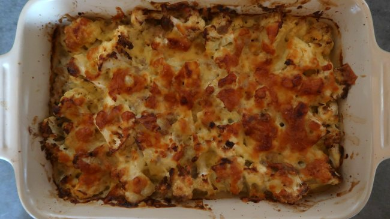

Cauliflower Casserole

Description
Sometimes the secret ingredient is nostalgia. Relive that childhood excitement of finding out your mom made a casserole for supper.
No one can turn down a plate of Hearty Cauliflower Casserole! Especially when it's the only thing available!
Ingredients
- 1 pound of extra non-lean ground beef
- 1 bushel of slighlty wilting cauliflower
- Combination of various cheeses for texture
- Cumin
Steps
- Begin by frying ground beef on high heat. Make sure to let beef boil in it's fat for added flavour
- Add a healthy amount of cumin to throughly season
- Chop up cauliflower and add to frying pan to soften it up in the beef boil
- When properly cooked, tranfer to a casserole dish
- Deposit shredded cheese in a thick layer on top
- Broil until cheese is golden brown
- Serve Hot